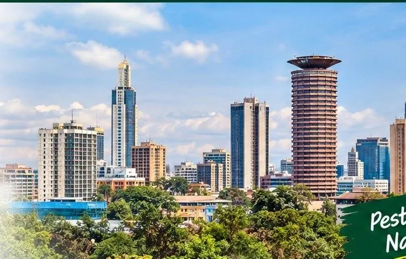

Pest problems to discuss
Depending on the property, customers may need help with cockroaches, ants, bedbugs, rodents and mosquitoes. Tell us what you have seen, where it is happening and how long the problem has been present.
Umoja residential areas can experience common household pest problems including cockroaches, bedbugs, rodents, mosquitoes and ants. Pestokil provides assessment-led pest control for homes and small businesses in Umoja.

We can discuss treatment preparation, occupant safety and follow-up terms before work begins. Send your area, pest type and property details by WhatsApp for a quote or assessment route.
Bedbug treatment · Cockroach control · Rodent control · Termite control · Mosquito control · Ant and fly control · General pest assessment
We explain preparation, access, occupant precautions and any re-entry requirements that apply to the selected treatment method.
Tell us your premises type, operating hours and pest issue. We can discuss treatment timing and any documentation or follow-up needs.
Appointments depend on location, treatment requirements and the current schedule. Contact Pestokil to confirm the next suitable slot.
Send your location, pest type and property type. Pestokil will guide you on the appropriate assessment or treatment route.
Umoja has dense residential estates, apartments and local businesses. Indoor pest control often benefits from addressing kitchens, drains, waste points and building entry routes.
For a quote, send the exact neighbourhood, property type and pest problem on WhatsApp. The treatment scope, preparation and any follow-up terms are confirmed for the actual site.
Pestokil provides pest-control support for family homes, apartments and mixed residential properties. Service planning should reflect the property, pest activity, access requirements and any preparation needed before treatment.
Depending on the property, customers may need help with cockroaches, ants, bedbugs, rodents and mosquitoes. Tell us what you have seen, where it is happening and how long the problem has been present.
Share your area in Umoja, property type, pest problem, affected rooms and a clear photo where possible. This helps the team understand the request before confirming the next step.
If multiple rooms, units or operational areas are involved, ask for the treatment scope, preparation instructions and follow-up requirements to be documented in the quotation.